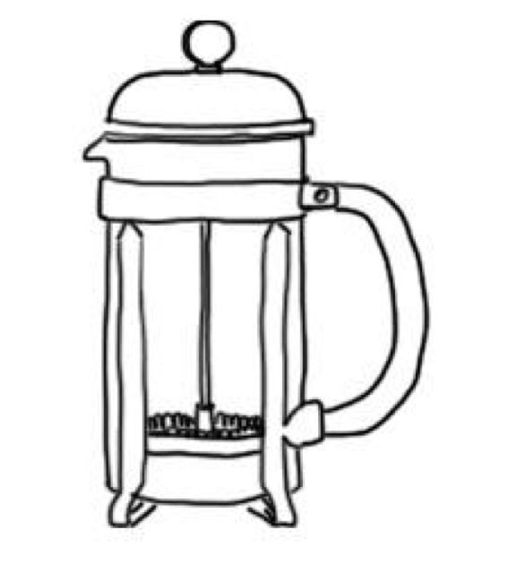

May 12, 2018
all types of french presses
 This morning I cracked my eyes with a French press coffee, and went to the gym where I was made to do the French press exercise.
My teammates didn’t understand why I found that so interesting. It just got me thinking how the same words can hold different meanings to different people. The fluidity of language, perception is reality, all that stuff.
One French press tasted delicious, the other made me lose feeling in both shoulders.